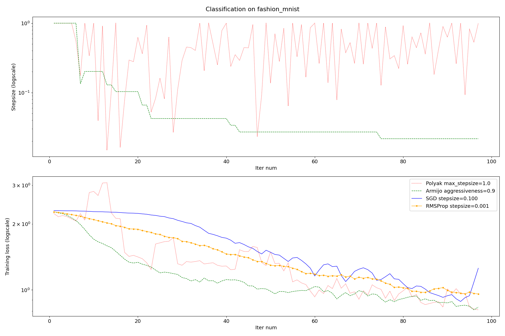

Note
Go to the end to download the full example code
Comparison of different SGD algorithms.
The purpose of this example is to illustrate the power of adaptive stepsize algorithms.
We chose a classification task with classes that are easily separable and no regularization (interpolating regime).
We compare:
SGD with Polyak stepsize (theoretical guarantees require interpolation)
SGD with Armijo line search (theoretical guarantees require interpolation)
SGD with constant stepsize
RMSprop
The reported training loss is an estimation of the true training loss based
on the current minibatch.
This experiment was conducted without momentum, with popular default values for learning rate.
Downloading and preparing dataset 29.45 MiB (download: 29.45 MiB, generated: 36.42 MiB, total: 65.87 MiB) to /home/runner/tensorflow_datasets/fashion_mnist/3.0.1...
Dl Completed...: 0 url [00:00, ? url/s]
Dl Size...: 0 MiB [00:00, ? MiB/s]
Extraction completed...: 0 file [00:00, ? file/s]
Dl Completed...: 0%| | 0/1 [00:00<?, ? url/s]
Dl Size...: 0 MiB [00:00, ? MiB/s]
Extraction completed...: 0 file [00:00, ? file/s]
Dl Completed...: 0%| | 0/2 [00:00<?, ? url/s]
Dl Size...: 0 MiB [00:00, ? MiB/s]
Extraction completed...: 0 file [00:00, ? file/s]
Dl Completed...: 0%| | 0/3 [00:00<?, ? url/s]
Dl Size...: 0 MiB [00:00, ? MiB/s]
Extraction completed...: 0 file [00:00, ? file/s]
Dl Completed...: 0%| | 0/4 [00:00<?, ? url/s]
Dl Size...: 0 MiB [00:00, ? MiB/s]
Extraction completed...: 0 file [00:00, ? file/s]
Dl Completed...: 0%| | 0/4 [00:00<?, ? url/s]
Dl Size...: 0 MiB [00:00, ? MiB/s]
Extraction completed...: 0 file [00:00, ? file/s]
Dl Completed...: 25%|██▌ | 1/4 [00:00<00:01, 2.76 url/s]
Dl Completed...: 25%|██▌ | 1/4 [00:00<00:01, 2.76 url/s]
Dl Size...: 0 MiB [00:00, ? MiB/s]
Extraction completed...: 0 file [00:00, ? file/s]
Dl Completed...: 25%|██▌ | 1/4 [00:00<00:01, 2.76 url/s]
Dl Size...: 0 MiB [00:00, ? MiB/s]
Extraction completed...: 0%| | 0/1 [00:00<?, ? file/s]
Extraction completed...: 100%|██████████| 1/1 [00:00<00:00, 2.73 file/s]
Dl Completed...: 25%|██▌ | 1/4 [00:00<00:01, 2.76 url/s]
Dl Size...: 0 MiB [00:00, ? MiB/s]
Extraction completed...: 100%|██████████| 1/1 [00:00<00:00, 2.73 file/s]
Dl Completed...: 25%|██▌ | 1/4 [00:00<00:01, 2.76 url/s]
Dl Size...: 0%| | 0/25 [00:00<?, ? MiB/s]
Extraction completed...: 100%|██████████| 1/1 [00:00<00:00, 2.73 file/s]
Dl Completed...: 25%|██▌ | 1/4 [00:00<00:01, 2.76 url/s]
Dl Size...: 0%| | 0/25 [00:00<?, ? MiB/s]
Extraction completed...: 100%|██████████| 1/1 [00:00<00:00, 2.73 file/s]
Dl Completed...: 25%|██▌ | 1/4 [00:00<00:01, 2.76 url/s]
Dl Size...: 0%| | 0/29 [00:00<?, ? MiB/s]
Extraction completed...: 100%|██████████| 1/1 [00:00<00:00, 2.73 file/s]
Dl Completed...: 50%|█████ | 2/4 [00:00<00:00, 4.02 url/s]
Dl Completed...: 50%|█████ | 2/4 [00:00<00:00, 4.02 url/s]
Dl Size...: 0%| | 0/29 [00:00<?, ? MiB/s]
Extraction completed...: 100%|██████████| 1/1 [00:00<00:00, 2.73 file/s]
Dl Completed...: 50%|█████ | 2/4 [00:00<00:00, 4.02 url/s]
Dl Size...: 0%| | 0/29 [00:00<?, ? MiB/s]
Extraction completed...: 50%|█████ | 1/2 [00:00<00:00, 2.73 file/s]
Extraction completed...: 100%|██████████| 2/2 [00:00<00:00, 4.01 file/s]
Dl Completed...: 50%|█████ | 2/4 [00:00<00:00, 4.02 url/s]
Dl Size...: 0%| | 0/29 [00:00<?, ? MiB/s]
Extraction completed...: 100%|██████████| 2/2 [00:00<00:00, 4.01 file/s]
Dl Size...: 3%|▎ | 1/29 [00:01<00:36, 1.31s/ MiB]
Dl Completed...: 50%|█████ | 2/4 [00:01<00:00, 4.02 url/s]
Dl Size...: 3%|▎ | 1/29 [00:01<00:36, 1.31s/ MiB]
Extraction completed...: 100%|██████████| 2/2 [00:01<00:00, 4.01 file/s]
Dl Completed...: 50%|█████ | 2/4 [00:01<00:00, 4.02 url/s]
Dl Size...: 7%|▋ | 2/29 [00:01<00:35, 1.31s/ MiB]
Extraction completed...: 100%|██████████| 2/2 [00:01<00:00, 4.01 file/s]
Dl Size...: 10%|█ | 3/29 [00:01<00:10, 2.52 MiB/s]
Dl Completed...: 50%|█████ | 2/4 [00:01<00:00, 4.02 url/s]
Dl Size...: 10%|█ | 3/29 [00:01<00:10, 2.52 MiB/s]
Extraction completed...: 100%|██████████| 2/2 [00:01<00:00, 4.01 file/s]
Dl Completed...: 50%|█████ | 2/4 [00:01<00:00, 4.02 url/s]
Dl Size...: 14%|█▍ | 4/29 [00:01<00:09, 2.52 MiB/s]
Extraction completed...: 100%|██████████| 2/2 [00:01<00:00, 4.01 file/s]
Dl Completed...: 50%|█████ | 2/4 [00:01<00:00, 4.02 url/s]
Dl Size...: 17%|█▋ | 5/29 [00:01<00:09, 2.52 MiB/s]
Extraction completed...: 100%|██████████| 2/2 [00:01<00:00, 4.01 file/s]
Dl Completed...: 50%|█████ | 2/4 [00:01<00:00, 4.02 url/s]
Dl Size...: 21%|██ | 6/29 [00:01<00:09, 2.52 MiB/s]
Extraction completed...: 100%|██████████| 2/2 [00:01<00:00, 4.01 file/s]
Dl Size...: 24%|██▍ | 7/29 [00:01<00:03, 6.45 MiB/s]
Dl Completed...: 50%|█████ | 2/4 [00:01<00:00, 4.02 url/s]
Dl Size...: 24%|██▍ | 7/29 [00:01<00:03, 6.45 MiB/s]
Extraction completed...: 100%|██████████| 2/2 [00:01<00:00, 4.01 file/s]
Dl Completed...: 50%|█████ | 2/4 [00:01<00:00, 4.02 url/s]
Dl Size...: 28%|██▊ | 8/29 [00:01<00:03, 6.45 MiB/s]
Extraction completed...: 100%|██████████| 2/2 [00:01<00:00, 4.01 file/s]
Dl Completed...: 50%|█████ | 2/4 [00:01<00:00, 4.02 url/s]
Dl Size...: 31%|███ | 9/29 [00:01<00:03, 6.45 MiB/s]
Extraction completed...: 100%|██████████| 2/2 [00:01<00:00, 4.01 file/s]
Dl Completed...: 50%|█████ | 2/4 [00:01<00:00, 4.02 url/s]
Dl Size...: 34%|███▍ | 10/29 [00:01<00:02, 6.45 MiB/s]
Extraction completed...: 100%|██████████| 2/2 [00:01<00:00, 4.01 file/s]
Dl Completed...: 75%|███████▌ | 3/4 [00:01<00:00, 1.54 url/s]
Dl Completed...: 75%|███████▌ | 3/4 [00:01<00:00, 1.54 url/s]
Dl Size...: 34%|███▍ | 10/29 [00:01<00:02, 6.45 MiB/s]
Extraction completed...: 100%|██████████| 2/2 [00:01<00:00, 4.01 file/s]
Dl Completed...: 75%|███████▌ | 3/4 [00:01<00:00, 1.54 url/s]
Dl Size...: 34%|███▍ | 10/29 [00:01<00:02, 6.45 MiB/s]
Extraction completed...: 67%|██████▋ | 2/3 [00:01<00:00, 4.01 file/s]
Extraction completed...: 100%|██████████| 3/3 [00:01<00:00, 1.47 file/s]
Dl Completed...: 75%|███████▌ | 3/4 [00:01<00:00, 1.54 url/s]
Dl Size...: 34%|███▍ | 10/29 [00:01<00:02, 6.45 MiB/s]
Extraction completed...: 100%|██████████| 3/3 [00:01<00:00, 1.47 file/s]
Dl Size...: 38%|███▊ | 11/29 [00:01<00:01, 10.22 MiB/s]
Dl Completed...: 75%|███████▌ | 3/4 [00:01<00:00, 1.54 url/s]
Dl Size...: 38%|███▊ | 11/29 [00:01<00:01, 10.22 MiB/s]
Extraction completed...: 100%|██████████| 3/3 [00:01<00:00, 1.47 file/s]
Dl Completed...: 75%|███████▌ | 3/4 [00:01<00:00, 1.54 url/s]
Dl Size...: 41%|████▏ | 12/29 [00:01<00:01, 10.22 MiB/s]
Extraction completed...: 100%|██████████| 3/3 [00:01<00:00, 1.47 file/s]
Dl Size...: 45%|████▍ | 13/29 [00:01<00:01, 10.82 MiB/s]
Dl Completed...: 75%|███████▌ | 3/4 [00:01<00:00, 1.54 url/s]
Dl Size...: 45%|████▍ | 13/29 [00:01<00:01, 10.82 MiB/s]
Extraction completed...: 100%|██████████| 3/3 [00:01<00:00, 1.47 file/s]
Dl Completed...: 75%|███████▌ | 3/4 [00:01<00:00, 1.54 url/s]
Dl Size...: 48%|████▊ | 14/29 [00:01<00:01, 10.82 MiB/s]
Extraction completed...: 100%|██████████| 3/3 [00:01<00:00, 1.47 file/s]
Dl Size...: 52%|█████▏ | 15/29 [00:02<00:01, 11.42 MiB/s]
Dl Completed...: 75%|███████▌ | 3/4 [00:02<00:00, 1.54 url/s]
Dl Size...: 52%|█████▏ | 15/29 [00:02<00:01, 11.42 MiB/s]
Extraction completed...: 100%|██████████| 3/3 [00:02<00:00, 1.47 file/s]
Dl Completed...: 75%|███████▌ | 3/4 [00:02<00:00, 1.54 url/s]
Dl Size...: 55%|█████▌ | 16/29 [00:02<00:01, 11.42 MiB/s]
Extraction completed...: 100%|██████████| 3/3 [00:02<00:00, 1.47 file/s]
Dl Completed...: 75%|███████▌ | 3/4 [00:02<00:00, 1.54 url/s]
Dl Size...: 59%|█████▊ | 17/29 [00:02<00:01, 11.42 MiB/s]
Extraction completed...: 100%|██████████| 3/3 [00:02<00:00, 1.47 file/s]
Dl Size...: 62%|██████▏ | 18/29 [00:02<00:00, 13.32 MiB/s]
Dl Completed...: 75%|███████▌ | 3/4 [00:02<00:00, 1.54 url/s]
Dl Size...: 62%|██████▏ | 18/29 [00:02<00:00, 13.32 MiB/s]
Extraction completed...: 100%|██████████| 3/3 [00:02<00:00, 1.47 file/s]
Dl Completed...: 75%|███████▌ | 3/4 [00:02<00:00, 1.54 url/s]
Dl Size...: 66%|██████▌ | 19/29 [00:02<00:00, 13.32 MiB/s]
Extraction completed...: 100%|██████████| 3/3 [00:02<00:00, 1.47 file/s]
Dl Completed...: 75%|███████▌ | 3/4 [00:02<00:00, 1.54 url/s]
Dl Size...: 69%|██████▉ | 20/29 [00:02<00:00, 13.32 MiB/s]
Extraction completed...: 100%|██████████| 3/3 [00:02<00:00, 1.47 file/s]
Dl Size...: 72%|███████▏ | 21/29 [00:02<00:00, 14.82 MiB/s]
Dl Completed...: 75%|███████▌ | 3/4 [00:02<00:00, 1.54 url/s]
Dl Size...: 72%|███████▏ | 21/29 [00:02<00:00, 14.82 MiB/s]
Extraction completed...: 100%|██████████| 3/3 [00:02<00:00, 1.47 file/s]
Dl Completed...: 75%|███████▌ | 3/4 [00:02<00:00, 1.54 url/s]
Dl Size...: 76%|███████▌ | 22/29 [00:02<00:00, 14.82 MiB/s]
Extraction completed...: 100%|██████████| 3/3 [00:02<00:00, 1.47 file/s]
Dl Size...: 79%|███████▉ | 23/29 [00:02<00:00, 14.41 MiB/s]
Dl Completed...: 75%|███████▌ | 3/4 [00:02<00:00, 1.54 url/s]
Dl Size...: 79%|███████▉ | 23/29 [00:02<00:00, 14.41 MiB/s]
Extraction completed...: 100%|██████████| 3/3 [00:02<00:00, 1.47 file/s]
Dl Completed...: 75%|███████▌ | 3/4 [00:02<00:00, 1.54 url/s]
Dl Size...: 83%|████████▎ | 24/29 [00:02<00:00, 14.41 MiB/s]
Extraction completed...: 100%|██████████| 3/3 [00:02<00:00, 1.47 file/s]
Dl Completed...: 75%|███████▌ | 3/4 [00:02<00:00, 1.54 url/s]
Dl Size...: 86%|████████▌ | 25/29 [00:02<00:00, 14.41 MiB/s]
Extraction completed...: 100%|██████████| 3/3 [00:02<00:00, 1.47 file/s]
Dl Size...: 90%|████████▉ | 26/29 [00:02<00:00, 15.70 MiB/s]
Dl Completed...: 75%|███████▌ | 3/4 [00:02<00:00, 1.54 url/s]
Dl Size...: 90%|████████▉ | 26/29 [00:02<00:00, 15.70 MiB/s]
Extraction completed...: 100%|██████████| 3/3 [00:02<00:00, 1.47 file/s]
Dl Completed...: 75%|███████▌ | 3/4 [00:02<00:00, 1.54 url/s]
Dl Size...: 93%|█████████▎| 27/29 [00:02<00:00, 15.70 MiB/s]
Extraction completed...: 100%|██████████| 3/3 [00:02<00:00, 1.47 file/s]
Dl Completed...: 75%|███████▌ | 3/4 [00:02<00:00, 1.54 url/s]
Dl Size...: 97%|█████████▋| 28/29 [00:02<00:00, 15.70 MiB/s]
Extraction completed...: 100%|██████████| 3/3 [00:02<00:00, 1.47 file/s]
Dl Size...: 100%|██████████| 29/29 [00:02<00:00, 16.61 MiB/s]
Dl Completed...: 75%|███████▌ | 3/4 [00:02<00:00, 1.54 url/s]
Dl Size...: 100%|██████████| 29/29 [00:02<00:00, 16.61 MiB/s]
Extraction completed...: 100%|██████████| 3/3 [00:02<00:00, 1.47 file/s]
Dl Completed...: 100%|██████████| 4/4 [00:02<00:00, 1.14 url/s]
Dl Completed...: 100%|██████████| 4/4 [00:02<00:00, 1.14 url/s]
Dl Size...: 100%|██████████| 29/29 [00:02<00:00, 16.61 MiB/s]
Extraction completed...: 100%|██████████| 3/3 [00:02<00:00, 1.47 file/s]
Dl Completed...: 100%|██████████| 4/4 [00:03<00:00, 1.14 url/s]
Dl Size...: 100%|██████████| 29/29 [00:03<00:00, 16.61 MiB/s]
Extraction completed...: 75%|███████▌ | 3/4 [00:03<00:00, 1.47 file/s]
Extraction completed...: 100%|██████████| 4/4 [00:03<00:00, 1.03s/ file]
Dl Completed...: 100%|██████████| 4/4 [00:03<00:00, 1.14 url/s]
Dl Size...: 100%|██████████| 29/29 [00:03<00:00, 16.61 MiB/s]
Extraction completed...: 100%|██████████| 4/4 [00:03<00:00, 1.03s/ file]
Extraction completed...: 100%|██████████| 4/4 [00:03<00:00, 1.21 file/s]
Dl Size...: 100%|██████████| 29/29 [00:03<00:00, 8.78 MiB/s]
Dl Completed...: 100%|██████████| 4/4 [00:03<00:00, 1.21 url/s]
Generating splits...: 0%| | 0/2 [00:00<?, ? splits/s]
Generating train examples...: 0%| | 0/60000 [00:00<?, ? examples/s]
Generating train examples...: 2%|▏ | 1300/60000 [00:01<00:45, 1299.35 examples/s]
Generating train examples...: 5%|▍ | 2795/60000 [00:02<00:40, 1414.07 examples/s]
Generating train examples...: 7%|▋ | 4326/60000 [00:03<00:37, 1467.37 examples/s]
Generating train examples...: 10%|▉ | 5848/60000 [00:04<00:36, 1488.69 examples/s]
Generating train examples...: 12%|█▏ | 7372/60000 [00:05<00:35, 1501.23 examples/s]
Generating train examples...: 15%|█▍ | 8874/60000 [00:06<00:34, 1499.54 examples/s]
Generating train examples...: 17%|█▋ | 10392/60000 [00:07<00:32, 1505.53 examples/s]
Generating train examples...: 20%|█▉ | 11910/60000 [00:08<00:31, 1509.47 examples/s]
Generating train examples...: 22%|██▏ | 13420/60000 [00:09<00:30, 1507.15 examples/s]
Generating train examples...: 25%|██▍ | 14928/60000 [00:10<00:29, 1506.31 examples/s]
Generating train examples...: 27%|██▋ | 16446/60000 [00:11<00:28, 1509.82 examples/s]
Generating train examples...: 30%|██▉ | 17956/60000 [00:12<00:27, 1507.65 examples/s]
Generating train examples...: 32%|███▏ | 19469/60000 [00:13<00:26, 1508.98 examples/s]
Generating train examples...: 35%|███▍ | 20982/60000 [00:14<00:25, 1509.98 examples/s]
Generating train examples...: 38%|███▊ | 22502/60000 [00:15<00:24, 1512.77 examples/s]
Generating train examples...: 40%|████ | 24018/60000 [00:16<00:23, 1513.70 examples/s]
Generating train examples...: 43%|████▎ | 25532/60000 [00:17<00:22, 1510.00 examples/s]
Generating train examples...: 45%|████▌ | 27043/60000 [00:18<00:21, 1500.57 examples/s]
Generating train examples...: 48%|████▊ | 28544/60000 [00:19<00:20, 1499.63 examples/s]
Generating train examples...: 50%|█████ | 30058/60000 [00:20<00:19, 1503.64 examples/s]
Generating train examples...: 53%|█████▎ | 31562/60000 [00:21<00:18, 1500.19 examples/s]
Generating train examples...: 55%|█████▌ | 33063/60000 [00:22<00:18, 1496.11 examples/s]
Generating train examples...: 58%|█████▊ | 34560/60000 [00:23<00:17, 1495.79 examples/s]
Generating train examples...: 60%|██████ | 36059/60000 [00:24<00:15, 1496.70 examples/s]
Generating train examples...: 63%|██████▎ | 37575/60000 [00:25<00:14, 1502.30 examples/s]
Generating train examples...: 65%|██████▌ | 39083/60000 [00:26<00:13, 1504.00 examples/s]
Generating train examples...: 68%|██████▊ | 40597/60000 [00:27<00:12, 1506.96 examples/s]
Generating train examples...: 70%|███████ | 42119/60000 [00:28<00:11, 1511.27 examples/s]
Generating train examples...: 73%|███████▎ | 43631/60000 [00:29<00:10, 1503.05 examples/s]
Generating train examples...: 75%|███████▌ | 45135/60000 [00:30<00:09, 1502.30 examples/s]
Generating train examples...: 78%|███████▊ | 46645/60000 [00:31<00:08, 1504.32 examples/s]
Generating train examples...: 80%|████████ | 48155/60000 [00:32<00:07, 1505.92 examples/s]
Generating train examples...: 83%|████████▎ | 49661/60000 [00:33<00:06, 1497.38 examples/s]
Generating train examples...: 85%|████████▌ | 51159/60000 [00:34<00:05, 1492.59 examples/s]
Generating train examples...: 88%|████████▊ | 52657/60000 [00:35<00:04, 1494.14 examples/s]
Generating train examples...: 90%|█████████ | 54152/60000 [00:36<00:03, 1493.89 examples/s]
Generating train examples...: 93%|█████████▎| 55646/60000 [00:37<00:02, 1486.41 examples/s]
Generating train examples...: 95%|█████████▌| 57133/60000 [00:38<00:01, 1484.76 examples/s]
Generating train examples...: 98%|█████████▊| 58618/60000 [00:39<00:00, 1483.78 examples/s]
Shuffling /home/runner/tensorflow_datasets/fashion_mnist/3.0.1.incompleteHHPEKU/fashion_mnist-train.tfrecord*...: 0%| | 0/60000 [00:00<?, ? examples/s]
Shuffling /home/runner/tensorflow_datasets/fashion_mnist/3.0.1.incompleteHHPEKU/fashion_mnist-train.tfrecord*...: 38%|███▊ | 22789/60000 [00:00<00:00, 227868.49 examples/s]
Shuffling /home/runner/tensorflow_datasets/fashion_mnist/3.0.1.incompleteHHPEKU/fashion_mnist-train.tfrecord*...: 97%|█████████▋| 58219/60000 [00:00<00:00, 302223.26 examples/s]
Generating splits...: 50%|█████ | 1/2 [00:40<00:40, 40.31s/ splits]
Generating test examples...: 0%| | 0/10000 [00:00<?, ? examples/s]
Generating test examples...: 14%|█▍ | 1447/10000 [00:01<00:05, 1446.42 examples/s]
Generating test examples...: 29%|██▉ | 2923/10000 [00:02<00:04, 1463.77 examples/s]
Generating test examples...: 44%|████▍ | 4423/10000 [00:03<00:03, 1480.02 examples/s]
Generating test examples...: 59%|█████▉ | 5938/10000 [00:04<00:02, 1493.73 examples/s]
Generating test examples...: 74%|███████▍ | 7432/10000 [00:05<00:01, 1493.30 examples/s]
Generating test examples...: 89%|████████▉ | 8926/10000 [00:06<00:00, 1484.49 examples/s]
Shuffling /home/runner/tensorflow_datasets/fashion_mnist/3.0.1.incompleteHHPEKU/fashion_mnist-test.tfrecord*...: 0%| | 0/10000 [00:00<?, ? examples/s]
Generating splits...: 100%|██████████| 2/2 [00:47<00:00, 20.58s/ splits]
Dataset fashion_mnist downloaded and prepared to /home/runner/tensorflow_datasets/fashion_mnist/3.0.1. Subsequent calls will reuse this data.
[Polyak SGD] ( 0), error=0.272, loss=2.301, stepsize=1.000000
[Polyak SGD] ( 20), error=2.041, loss=1.512, stepsize=0.363120
[Polyak SGD] ( 40), error=2.291, loss=1.247, stepsize=0.237692
[Polyak SGD] ( 60), error=1.960, loss=1.016, stepsize=0.264367
[Polyak SGD] ( 80), error=2.166, loss=1.204, stepsize=0.256637
[Polyak SGD] ( 100), error=2.035, loss=0.995, stepsize=0.240228
101 iterations of Polyak SGD took 19.90s
[Armijo SGD] ( 0), error=0.227, loss=2.313, stepsize=1.000000
[Armijo SGD] ( 20), error=2.221, loss=1.331, stepsize=0.065971
[Armijo SGD] ( 40), error=2.062, loss=1.080, stepsize=0.033777
[Armijo SGD] ( 60), error=3.499, loss=1.059, stepsize=0.027022
[Armijo SGD] ( 80), error=1.456, loss=0.863, stepsize=0.021617
[Armijo SGD] ( 100), error=1.689, loss=0.819, stepsize=0.021617
101 iterations of Armijo SGD took 23.99s
[RMSProp] ( 0), error=0.223, loss=2.299
[RMSProp] ( 20), error=0.869, loss=1.913
[RMSProp] ( 40), error=1.152, loss=1.453
[RMSProp] ( 60), error=1.114, loss=1.211
[RMSProp] ( 80), error=1.569, loss=1.086
[RMSProp] ( 100), error=1.585, loss=1.002
101 iterations of RMSProp took 18.62s
[SGD] ( 0), error=0.190, loss=2.306
[SGD] ( 20), error=0.384, loss=2.236
[SGD] ( 40), error=2.765, loss=1.878
[SGD] ( 60), error=1.222, loss=1.092
[SGD] ( 80), error=1.637, loss=1.146
[SGD] ( 100), error=4.392, loss=1.671
101 iterations of SGD took 18.65s
from absl import flags
import logging
import sys
from timeit import default_timer as timer
import jax
import jax.numpy as jnp
from jaxopt import loss
from jaxopt import ArmijoSGD
from jaxopt import PolyakSGD
from jaxopt import OptaxSolver
from jaxopt.tree_util import tree_l2_norm, tree_sub
import optax
from flax import linen as nn
import numpy as onp
import matplotlib.pyplot as plt
from scipy.signal import convolve
import tensorflow_datasets as tfds
import tensorflow as tf
dataset_names = [
"mnist", "kmnist", "emnist", "fashion_mnist", "cifar10", "cifar100"
]
flags.DEFINE_float("rmsprop_stepsize", 1e-3, "RMSProp stepsize")
flags.DEFINE_float("gd_stepsize", 1e-1, "Gradient descent stepsize")
flags.DEFINE_float("aggressiveness", 0.9, "Aggressiveness of line search in armijo-sgd.")
flags.DEFINE_float("max_stepsize", 1.0, "Maximum step size (used in polyak-sgd, armijo-sgd).")
flags.DEFINE_integer("maxiter", 100, "Maximum number of iterations.")
flags.DEFINE_integer("batch_size", 128, "Batch-size.")
flags.DEFINE_integer("net_width", 4, "Width mutiplicator of network.")
flags.DEFINE_enum("dataset", "fashion_mnist", dataset_names, "Dataset to train on.")
jax.config.update("jax_platform_name", "cpu")
plt.rcParams.update({'font.size': 13})
# Load dataset.
def load_dataset(dataset, batch_size):
"""Loads the dataset as a generator of batches."""
train_ds, ds_info = tfds.load(f"{dataset}:3.*.*", split="train",
as_supervised=True, with_info=True)
train_ds = train_ds.repeat()
train_ds = train_ds.shuffle(10 * batch_size, seed=0)
train_ds = train_ds.batch(batch_size)
return tfds.as_numpy(train_ds), ds_info
# Define NN architecture.
class CNN(nn.Module):
"""A simple CNN model."""
num_classes: int
net_width: int
@nn.compact
def __call__(self, x):
x = nn.Conv(features=self.net_width, kernel_size=(3, 3))(x)
x = nn.relu(x)
x = nn.avg_pool(x, window_shape=(2, 2), strides=(2, 2))
x = nn.Conv(features=self.net_width*2, kernel_size=(3, 3))(x)
x = nn.relu(x)
x = nn.avg_pool(x, window_shape=(2, 2), strides=(2, 2))
x = x.reshape((x.shape[0], -1)) # flatten
x = nn.Dense(features=self.net_width*4)(x)
x = nn.relu(x)
x = nn.Dense(features=self.num_classes)(x)
return x
def main(argv):
# manual flags parsing to avoid conflicts between absl.app.run and sphinx-gallery
flags.FLAGS(argv)
FLAGS = flags.FLAGS
# Hide any GPUs from TensorFlow. Otherwise TF might reserve memory and make
# it unavailable to JAX.
tf.config.experimental.set_visible_devices([], 'GPU')
train_ds, ds_info = load_dataset(FLAGS.dataset, FLAGS.batch_size)
# Initialize parameters.
input_shape = (1,) + ds_info.features["image"].shape
rng = jax.random.PRNGKey(0)
num_classes = ds_info.features["label"].num_classes
net = CNN(num_classes, FLAGS.net_width)
logistic_loss = jax.vmap(loss.multiclass_logistic_loss)
def loss_fun(params, data):
"""Compute the loss of the network."""
inputs, labels = data
x = inputs.astype(jnp.float32) / 255.
logits = net.apply({"params": params}, x)
loss_value = jnp.mean(logistic_loss(labels, logits))
return loss_value
def run_all(opt, name):
"""Train the NN on dataset with ``opt``."""
# Use same starting hyper-parameters for fair evaluation.
params = net.init(rng, jnp.zeros(input_shape))["params"]
# Use same batch order for fair evaluation
ds_iterator = iter(train_ds)
state = opt.init_state(params, data=next(ds_iterator))
value_and_grad_loss = jax.value_and_grad(loss_fun)
errors, steps, losses = [], [], []
start = timer()
for iter_num, batch in zip(range(opt.maxiter+1), ds_iterator):
loss, _ = value_and_grad_loss(params, data=batch)
params, state = opt.update(params, state, batch)
if "Armijo" in name or "Polyak" in name:
steps.append(state.stepsize)
errors.append(state.error)
losses.append(loss)
if iter_num % 20 == 0:
if "Armijo" in name or "Polyak" in name:
print(f"[{name}] ({iter_num:4d}), error={errors[-1]:.3f}, loss={losses[-1]:.3f}, stepsize={steps[-1]:.6f}")
else:
print(f"[{name}] ({iter_num:4d}), error={errors[-1]:.3f}, loss={losses[-1]:.3f}")
duration = timer() - start
print(f"{opt.maxiter+1} iterations of {name} took {duration:.2f}s\n")
losses = convolve(losses, onp.ones(5) / 5, mode='valid', method='direct') # smooth the curve
return errors[:len(losses)], steps[:len(losses)], losses
polyak = PolyakSGD(fun=loss_fun, max_stepsize=FLAGS.max_stepsize, maxiter=FLAGS.maxiter)
armijo = ArmijoSGD(fun=loss_fun, aggressiveness=FLAGS.aggressiveness, reset_option='goldstein',
max_stepsize=FLAGS.max_stepsize, maxls=20, maxiter=FLAGS.maxiter)
rmsprop = OptaxSolver(fun=loss_fun, maxiter=FLAGS.maxiter,
opt=optax.rmsprop(learning_rate=FLAGS.rmsprop_stepsize))
gd = OptaxSolver(fun=loss_fun, maxiter=FLAGS.maxiter,
opt=optax.sgd(learning_rate=FLAGS.gd_stepsize, nesterov=False))
errors_data, losses_data, stepsize_data = [], [], []
for opt, name in zip([polyak, armijo, rmsprop, gd], ["Polyak SGD", "Armijo SGD", "RMSProp", "SGD"]):
errors, steps, losses = run_all(opt, name)
errors_data.append(errors)
losses_data.append(losses)
stepsize_data.append(steps)
fig = plt.figure(figsize=(18,12))
fig.suptitle(f'Classification on {FLAGS.dataset}')
spec = fig.add_gridspec(ncols=2, nrows=2)
spec_slices = [spec[0,:], spec[1:,:]]
datas = stepsize_data, losses_data
names = ['Stepsize', 'Training loss']
for spec_slice, single_data, name in zip(spec_slices, datas, names):
polyak_data, armijo_data, rmsprop_data, gd_data = single_data
ax = fig.add_subplot(spec_slice)
ax.set_xlabel("Iter num")
ax.set_ylabel(f"{name} (logscale)")
iter_nums = jnp.arange(1, len(polyak_data)+1)
ax.plot(iter_nums, polyak_data, ':', c='red', linewidth=1., label=f'Polyak max_stepsize={FLAGS.max_stepsize}')
ax.plot(iter_nums, armijo_data, '--', c='green', linewidth=1., label=f'Armijo aggressiveness={FLAGS.aggressiveness}')
if name != 'Stepsize':
ax.plot(iter_nums, gd_data, '-', c='blue', linewidth=1., label=f'SGD stepsize={FLAGS.gd_stepsize:.3f}')
ax.plot(iter_nums, rmsprop_data, '.-', c='orange', linewidth=1., label=f'RMSProp stepsize={FLAGS.rmsprop_stepsize:.3f}')
ax.set_yscale('log')
leg = ax.legend(loc='upper right', framealpha=1.)
spec.tight_layout(fig)
plt.show()
if __name__ == "__main__":
main(sys.argv)
Total running time of the script: (2 minutes 36.822 seconds)